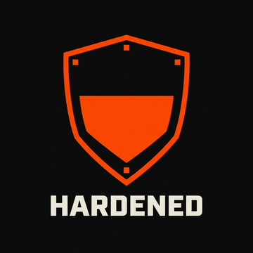
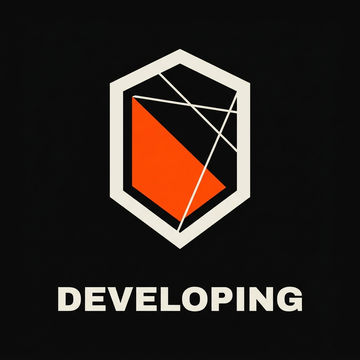
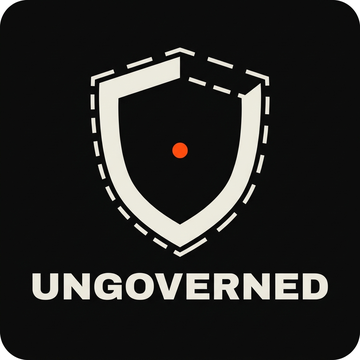

We pointed OpenAgentOntology at 46 of the most-used autonomous agents and MCP servers on GitHub. 46 of 46 came back UNGOVERNED — across 4037 side-effecting actions, 0 mapped to an asserted governance control. Every row below is a signed, reproducible scan. Verify any of them.
Tier is coverage made visible — how much of an agent's side-effecting surface maps to an asserted governance control. The badge fills as the governance does.



Sorted by tier, then score. ENTERPRISE‑SAFE = tier HARDENED or above — the same gate the CWN hosted notary uses to certify. Coverage is asserted controls (confirmed against published framework text) over total side-effecting actions; heuristic / inferred mappings are proposed, not asserted (pol.must_do.143).
| Target | Tier | Score | Asserted | Frameworks | Verdict | Evidence |
|---|---|---|---|---|---|---|
CWN reference · Governed reference agent shipped in the OAO repo. Shows the SOVEREIGN end of the scale. |
SOVEREIGN | 94/100 | 17/18 | EU AI Act, NIST SP 800-53r5, OWASP LLM Top 10 (2025) | ENTERPRISE‑SAFE | badge profile receipt ontology |
CWN reference · Governed reference agent. Asserted controls on nearly every side-effecting action. |
SOVEREIGN | 93/100 | 14/15 | EU AI Act, NIST SP 800-53r5, OWASP LLM Top 10 (2025) | ENTERPRISE‑SAFE | badge profile receipt ontology |
CWN reference · Partially governed reference — a mid-scale point between governed and ungoverned. |
UNGOVERNED | 41/100 | 3/16 | EU AI Act, NIST SP 800-53r5, OWASP LLM Top 10 (2025) | NOT SAFE | badge profile receipt ontology |
reworkd / AgentGPT @18b073a real third‑party · Scanned from the public repo. |
UNGOVERNED | 15/100 | 0/5 | none | NOT SAFE | badge profile receipt ontology |
agno-agi / agno @9369549 real third‑party · Scanned from the public repo. |
UNGOVERNED | 15/100 | 0/411 | none | NOT SAFE | badge profile receipt ontology |
aider-ai / aider @5dc9490 real third‑party · AI pair-programming agent. |
UNGOVERNED | 15/100 | 0/19 | none | NOT SAFE | badge profile receipt ontology |
Mintplex-Labs / anything-llm @6442ea9 real third‑party · Scanned from the public repo. |
UNGOVERNED | 15/100 | 0/62 | none | NOT SAFE | badge profile receipt ontology |
microsoft / autogen @027ecf0 real third‑party · Scanned from the public repo. |
UNGOVERNED | 15/100 | 0/57 | none | NOT SAFE | badge profile receipt ontology |
Significant-Gravitas / AutoGPT @ba178a7 real third‑party · Scanned from the public repo. |
UNGOVERNED | 15/100 | 0/385 | none | NOT SAFE | badge profile receipt ontology |
yoheinakajima / babyagi @fa8930e real third‑party · Scanned from the public repo. |
UNGOVERNED | 15/100 | 0/2 | none | NOT SAFE | badge profile receipt ontology |
browser-use / browser-use @6e08a5b real third‑party · Scanned from the public repo. |
UNGOVERNED | 15/100 | 0/42 | none | NOT SAFE | badge profile receipt ontology |
camel-ai / camel @1b9b6dc real third‑party · Scanned from the public repo. |
UNGOVERNED | 15/100 | 0/105 | none | NOT SAFE | badge profile receipt ontology |
OpenBMB / ChatDev @a6a5cda real third‑party · Scanned from the public repo. |
UNGOVERNED | 15/100 | 0/21 | none | NOT SAFE | badge profile receipt ontology |
crewAIInc / crewAI @373dca3 real third‑party · Scanned from the public repo. |
UNGOVERNED | 15/100 | 0/208 | none | NOT SAFE | badge profile receipt ontology |
stitionai / devika @80bb343 real third‑party · Scanned from the public repo. |
UNGOVERNED | 15/100 | 0/5 | none | NOT SAFE | badge profile receipt ontology |
stanfordnlp / dspy @85027b1 real third‑party · Scanned from the public repo. |
UNGOVERNED | 15/100 | 0/17 | none | NOT SAFE | badge profile receipt ontology |
e2b-dev / e2b @de47dfd real third‑party · Scanned from the public repo. |
UNGOVERNED | 15/100 | 0/77 | none | NOT SAFE | badge profile receipt ontology |
github / github-mcp-server @3422703 real third‑party · Scanned from the public repo. |
UNGOVERNED | 15/100 | 0/1 | none | NOT SAFE | badge profile receipt ontology |
gpt-engineer-org / gpt-engineer @a90fcd5 real third‑party · Autonomous coding agent. |
UNGOVERNED | 15/100 | 0/6 | none | NOT SAFE | badge profile receipt ontology |
Pythagora-io / gpt-pilot @a372904 real third‑party · Scanned from the public repo. |
UNGOVERNED | 15/100 | 0/42 | none | NOT SAFE | badge profile receipt ontology |
assafelovic / gpt-researcher @b364917 real third‑party · Scanned from the public repo. |
UNGOVERNED | 15/100 | 0/19 | none | NOT SAFE | badge profile receipt ontology |
guidance-ai / guidance @21b1d90 real third‑party · Scanned from the public repo. |
UNGOVERNED | 15/100 | 0/5 | none | NOT SAFE | badge profile receipt ontology |
deepset-ai / haystack @0fd3fb6 real third‑party · Scanned from the public repo. |
UNGOVERNED | 15/100 | 0/28 | none | NOT SAFE | badge profile receipt ontology |
khoj-ai / khoj @9258f57 real third‑party · Scanned from the public repo. |
UNGOVERNED | 15/100 | 0/29 | none | NOT SAFE | badge profile receipt ontology |
langchain-ai / langgraph @93307d6 real third‑party · Scanned from the public repo. |
UNGOVERNED | 15/100 | 0/61 | none | NOT SAFE | badge profile receipt ontology |
langroid / langroid @bc113b0 real third‑party · Scanned from the public repo. |
UNGOVERNED | 15/100 | 0/42 | none | NOT SAFE | badge profile receipt ontology |
letta-ai / letta @1131535 real third‑party · Scanned from the public repo. |
UNGOVERNED | 15/100 | 0/386 | none | NOT SAFE | badge profile receipt ontology |
danny-avila / LibreChat @8154a31 real third‑party · Scanned from the public repo. |
UNGOVERNED | 15/100 | 0/6 | none | NOT SAFE | badge profile receipt ontology |
BerriAI / litellm @1fd8ab4 real third‑party · Scanned from the public repo. |
UNGOVERNED | 15/100 | 0/288 | none | NOT SAFE | badge profile receipt ontology |
run-llama / llama_index @d8d7ffb real third‑party · Scanned from the public repo. |
UNGOVERNED | 15/100 | 0/129 | none | NOT SAFE | badge profile receipt ontology |
simonw / llm @0d593ea real third‑party · Scanned from the public repo. |
UNGOVERNED | 15/100 | 0/5 | none | NOT SAFE | badge profile receipt ontology |
modelcontextprotocol / python-sdk @7267818 real third‑party · The official MCP Python SDK + reference servers. |
UNGOVERNED | 15/100 | 0/170 | none | NOT SAFE | badge profile receipt ontology |
mem0ai / mem0 @2c796d1 real third‑party · Scanned from the public repo. |
UNGOVERNED | 15/100 | 0/91 | none | NOT SAFE | badge profile receipt ontology |
geekan / MetaGPT @11cdf46 real third‑party · Scanned from the public repo. |
UNGOVERNED | 15/100 | 0/57 | none | NOT SAFE | badge profile receipt ontology |
OpenInterpreter / open-interpreter @e00f08e real third‑party · Autonomous coding agent. exec maps to no asserted control. |
UNGOVERNED | 15/100 | 0/21 | none | NOT SAFE | badge profile receipt ontology graph |
open-webui / open-webui @02dc3e6 real third‑party · Scanned from the public repo. |
UNGOVERNED | 15/100 | 0/89 | none | NOT SAFE | badge profile receipt ontology |
openai / openai-agents-python @d8068d9 real third‑party · OpenAI Agents SDK for Python. |
UNGOVERNED | 15/100 | 0/235 | none | NOT SAFE | badge profile receipt ontology |
All-Hands-AI / OpenHands @faf0e08 real third‑party · Scanned from the public repo. |
UNGOVERNED | 15/100 | 0/47 | none | NOT SAFE | badge profile receipt ontology |
zylon-ai / private-gpt @8ac84e3 real third‑party · Scanned from the public repo. |
UNGOVERNED | 15/100 | 0/88 | none | NOT SAFE | badge profile receipt ontology |
pydantic / pydantic-ai @025f91f real third‑party · Scanned from the public repo. |
UNGOVERNED | 15/100 | 0/175 | none | NOT SAFE | badge profile receipt ontology |
microsoft / semantic-kernel @61331d8 real third‑party · Scanned from the public repo. |
UNGOVERNED | 15/100 | 0/293 | none | NOT SAFE | badge profile receipt ontology |
modelcontextprotocol / servers @275175c real third‑party · Scanned from the public repo. |
UNGOVERNED | 15/100 | 0/1 | none | NOT SAFE | badge profile receipt ontology |
huggingface / smolagents @e8b988d real third‑party · Scanned from the public repo. |
UNGOVERNED | 15/100 | 0/44 | none | NOT SAFE | badge profile receipt ontology |
TransformerOptimus / SuperAGI @c3c1982 real third‑party · Scanned from the public repo. |
UNGOVERNED | 15/100 | 0/21 | none | NOT SAFE | badge profile receipt ontology |
openai / swarm @6af0b4c real third‑party · Scanned from the public repo. |
UNGOVERNED | 15/100 | 0/25 | none | NOT SAFE | badge profile receipt ontology |
princeton-nlp / SWE-agent @c53556f real third‑party · Scanned from the public repo. |
UNGOVERNED | 15/100 | 0/44 | none | NOT SAFE | badge profile receipt ontology |
fetchai / uAgents @0f2c8a6 real third‑party · Scanned from the public repo. |
UNGOVERNED | 15/100 | 0/22 | none | NOT SAFE | badge profile receipt ontology |
microsoft / UFO @cff307f real third‑party · Scanned from the public repo. |
UNGOVERNED | 15/100 | 0/151 | none | NOT SAFE | badge profile receipt ontology |
mckaywrigley / chatbot-ui @81328b6 real third‑party · Scanned from the public repo. |
UNGOVERNED | 6/100 | 0/0 | none | NOT SAFE | badge profile receipt ontology |
The CWN reference agents map nearly every side-effecting action to an asserted NIST 800-53, EU AI Act, and OWASP LLM control. The receipt names the control for each one.
exec — arbitrary code execution — maps to no control at all. There is no record of which control answers for it, because there is no control.
The scanner reads source as data (Python via ast, never executed), emits a deterministic typed ontology, scores it, and signs an Ed25519 cert-only receipt over the evidence hash. The same source always yields the same hash. Re-run any real-world row:
Honest method note: the open-source scanner uses a static, asserted control table plus heuristic verb mapping. The CWN hosted layer (OAO-GMS) additionally grounds each action through a live NIST×MITRE×CVE knowledge graph and mints a triple-signed resolution receipt — shown as the graph link where present. Graph-grounded mappings are GRAPH_INFERRED, never auto-asserted.
Scan your own agent →